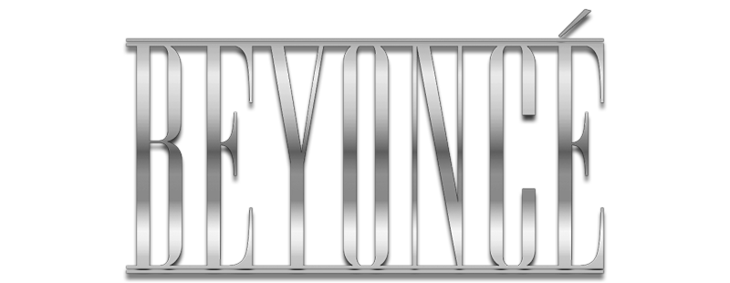
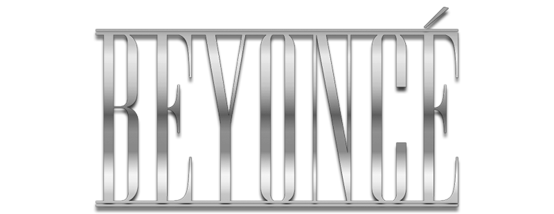

Renaissance (também intitulado como Act I: Renaissance) é o sétimo álbum de estúdio da cantora estadunidense Beyoncé, lançado em 29 de julho de 2022, através da Parkwood Entertainment e Columbia Records. É seu primeiro lançamento solo em estúdio desde Lemonade (2016) e serve como a primeira parte de uma trilogia. Beyoncé escreveu e produziu o álbum juntamente com Nova Wav, The-Dream, Symbolyc One, A. G. Cook, Honey Dijon, Beam, Tricky Stewart, BloodPop, Skrillex, Hit-Boy, No I.D., P2J e entre outros. Beam, Grace Jones e Tems fazem aparições como vocalistas.
Beyoncé concebeu e gravou o álbum durante a Pandemia de COVID-19, como uma forma de procurar inspirar a alegria e o escapismo nos ouvintes que experienciaram o isolamento e celebrar uma cultura clubber, na qual pessoas historicamente marginalizadas buscavam a sua própria libertação através da música dance. Com suas canções arranjadas como se fossem parte de um único set de um DJ, o álbum relaciona-se com os estilos de música de dance negra pós-1970, como o disco e o house e homenageia os precursores negros e queers desses gêneros. O conteúdo lírico do álbum explora temas como o escapismo, o hedoísmo, a autoconfiança e a autoexpressão.
O disco estreou no número um na parada estadunidense Billboard 200, sendo o sétimo álbum consecutivo de Beyoncé a alcançar esse feito. Também atingiu o topo das paradas da Austrália, Bélgica, Canadá, Dinamarca, França, Irlanda, Países Baixos, Nova Zelândia, Suécia e Reino Unido. Seu primeiro single, "Break My Soul", foi certificado com disco de platina nos Estados Unidos e alcançou o topo de várias paradas musicais mundo afora no seu lançamento em 20 de junho de 2022, incluindo a Billboard Hot 100. "Cuff It", lançado em sequência, atingiu as dez melhores colocações das tabelas nos Estados Unidos e internacionalmente.
O álbum foi amplamente aclamado pela crítica especializada da música por sua sonoridade eclética porém coesa, por seu humor alegre e pela performance vocal de Beyoncé. O álbum, que foi o mais elogiado de 2022, foi eleito o melhor álbum do ano por várias publicações, incluindo os jornais Los Angeles Times e The New York Times, a rádio NPR e as revistas Pitchfork e Rolling Stone. O disco recebeu nove indicações aos prêmios Grammy de 2023, incluindo Álbum do Ano, vencendo quatro delas, inclusive Melhor Álbum de Dance ou Eletrônica, tornando Beyoncé a pessoa mais premiada da história do Grammy. Para promover Reinassance, Beyoncé embarcou na Renaissance World Tour, que se iniciou em maio de 2023.
Antecedentes e Conceito
voltarCriar este álbum me concebeu um lugar para sonhar e para achar um escape durante um período assustador para o mundo. Me permitiu se sentir livre e aventurosa em um momento onde as coisas estavam mudando. Minha intenção era criar um lugar seguro, um lugar sem julgamentos. Um lugar para ser livre de perfeccionismo e de pensar demais. Um lugar para gritar, se liberar, sentir liberdade. — Beyoncé sobre Renaissance
Na última metade dos anos 2010, Beyoncé lançou vários projetos narrativos aclamados pela crítica que exploram o legado de artistas e musicistas negros, incluindo: o álbum Lemonade de 2016; sua performance no festival Coachella de 2018, inspirada pelas faculdades e universidades historicamente negras estadunidenses (as HBCUs) e o álbum ao vivo e o filme da Netflix que o documentou; e o álbum da trilha sonora de O Rei Leão de 2019, o The Gift, e seu companheiro visual, Black Is King, de 2020.
Beyoncé disse à Vogue britânica que a quarentena durante a pandemia de COVID-19 a mudou como pessoa, afirmando que "estava gastando muito tempo focando em construir um legado e representando sua cultura da melhor maneira que sabia. Agora, eu decidi dar permissão a mim mesma de focar em sua alegria". Posteriormente, ela chamou este período de "o mais criativo em sua vida" conforme procurava escapar dos sentimentos do isolamento gravando novas músicas. Enquanto o isolamento começou a acabar, Beyoncé disse à Harper's Bazaar que "nós já estamos prontos para escapar, viajar, amar, e rir de novo. Eu sinto um renascimento emergindo, e eu quero fazer parte de nutrir essa fuga de todas as maneiras possíveis.".
Beyoncé buscou inspiração na dance music e nas subculturas ballroom e clubbing do final dos anos 70. Beyoncé notou que ela já estava muito familiarizada à esta cultura pelo seu "tio" Johnny, seu primo gay que lutou contra o HIV e que ela diz ter sido "a primeira pessoa a expô-la a um monte de música e cultura que serviram de inspiração para este álbum." Johnny ajudou Beyoncé a se desenvolver como artista até sua morte por AIDS. Posteriormente, ela disse que queria que o álbum fosse uma celebração aos precursores subestimados da dance music, cujas contribuições não foram reconhecidas no mainstream.
A cantora começou a provocar um novo álbum em 7 de junho de 2022, removendo sua foto de perfil de todas as suas redes sociais. Quatro dias depois, o texto "O que é um B7?" apareceu na página inicial do site oficial da cantora. Os fãs notaram que o site também tinha espaços reservados para seus próximos sétimo e oitavo álbuns de estúdio. Beyoncé anunciou oficialmente Renaissance e colocou em pré-venda em seu site e plataformas de streaming digital no dia seguinte.
Após o lançamento do álbum, Beyoncé postou uma nota em seu site revelando que Renaissance é a primeira parte de um projeto de três atos que ela gravou nos últimos três anos durante a pandemia. Ela também compartilhou que o álbum é dedicado a seus filhos, seu marido e seu tio Johnny.
Arte da Capa
voltarEm 30 de junho de 2022, Beyoncé revelou a arte da capa de Renaissance, acompanhada de uma breve nota, em suas contas nas redes sociais. Na imagem da capa, ela está sentada em cima de um "brilhante", "holográfico", "cavalo de cristal" em um "biquíni futurista, tipo centopéia". Os críticos interpretaram a capa como uma alusão à pintura de John Collier de 1897, Lady Godiva e Bianca Jagger andando a cavalo no Studio 54. A roupa usada por Beyoncé na capa foi criada por Nusi Quero e lembra o top de cristal que Beyoncé usou na capa de Dangerously in Love de 2003.
Uma imagem de capa alternativa na versão vinil do álbum apresenta Beyoncé no mesmo cavalo. Atrás dela está a pintura de Luca Giordano, de 1690, La Conversion de Saint Paul, retratando a conversão do apóstolo Paulo.